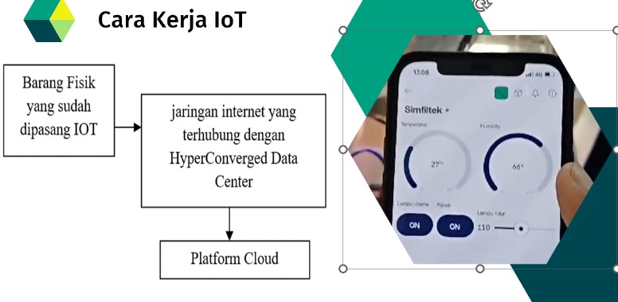

Berikut adalah proses dan pengujian prototype tim SimFilTek
Penggunaan IOT pada alat ini digunakan untuk mengkontrol alat Simfiltek dari Jarak jauh sebagai proteksi dan control alat untuk menjaga alat dari kerusakan dan dapat menjaga kualitas Udara ruangan tetap bersih dengan control Jarak jauh.
Gambar diatas merupakan ramcangan awal dalam prototype tim SimFilTek yang berisi Batu Apung,Fan AC 220 Volt, Hepa Filter,Alat Penampung Air kemudian ada Lumut (Moss),Kawat Penyangga Lumut, Water Pum Sprayer dan juga Steker yang mendukung proses berjalannya prototype SimFilTek.
Dalam pengerjaan dan hasil akhir prototype SimFiltek juga menggunakan Temperatur Humidity Controller Digital Termostat Hygrostat,IOT,Digital Timer,Digital Timer Omron DH 48S AC 220 V.

Gambar diatas merupakan pengerjaan dan hasil akhir dari SimFilTek.
Simfiltek (Udara Bersih dan Sehat dengan Sistem Filterasi Bioteknologi) adalah sebuah alat yang terdiri dari beberapa komponen utama, yaitu : kipas (Fan) menggunakan motor listrik sebagai penggerak yang berfungsi untuk mensirkulasikan udara pada ruang terbuka, lumut (moss) merupakan natural organism yang berfungsi sebagai filter udara untuk mengurangi tingkat kadar polutan berbahaya di udara serta untuk meningkatkan kualitas udara sehingga menjadi lebih bersih, segar dan baik untuk kesehatan, Selain itu juga terdapat water sprayer pump yang berfungsi untuk menjaga kelembaban lumut sehingga tidak mudah kering dan mati. Untuk pengembangan saat ini penvemprotan dapat diatur oleh sensor kelembaban berbasis IOT (Internet of Things) sehingga bisa diatur dan dimonitor oleh user melalui aplikasi android maupun IOS. Cara kerjanya yaitu udara kotor akan terhisap oleh fan (Kipas). Lalu, udara yang masuk akan langsung di filter oleh lumut, batu kali, Ijuk dan hepa filter,. Fan di bagian tengah berfungsi untuk membantu menyedot udara kotor dari luar, Dibagian tengah akan ada kapas saring atau yang bisa kita sebut juga penyaring dari bagian yang telah disaring itu akan masuk dikeluarkan ke fan out yang telah bersih. Setelah melewati fan tengah, udara akan di filter lagi menggunakan hepa filter agar udara yang keluar benar benar bersih, Setalah udara tersaring, maka udara akan di hembuskan dengan menggunakan 3 fan 220 volt AC yang berada di sisi depan, Dibagian bawah alat ini terdapat beberapa komponen penting, seperti arduino uno, power suply DC, water pump, dan bak penampungan air
Ingin tahu lebih banyak? Hubungi Kami